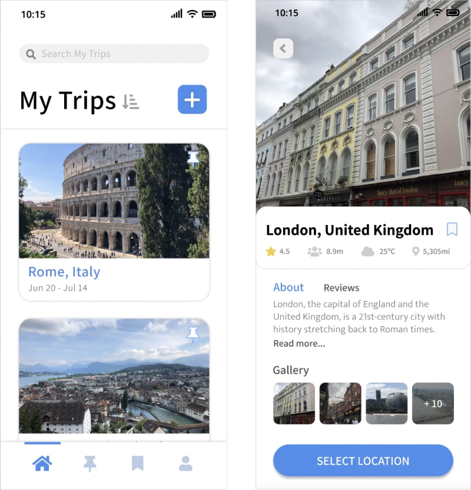
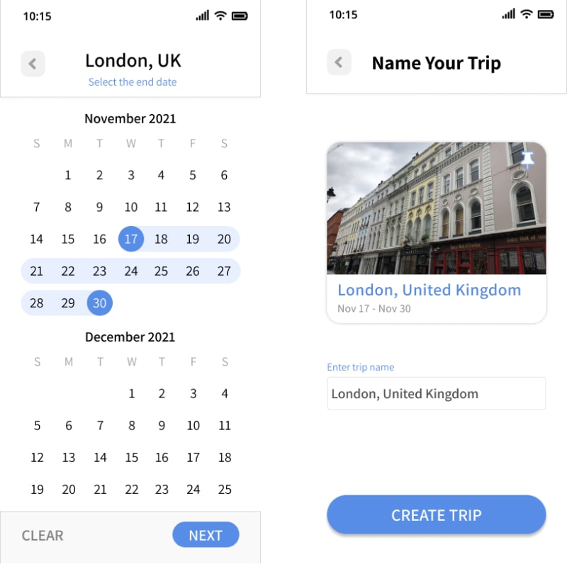
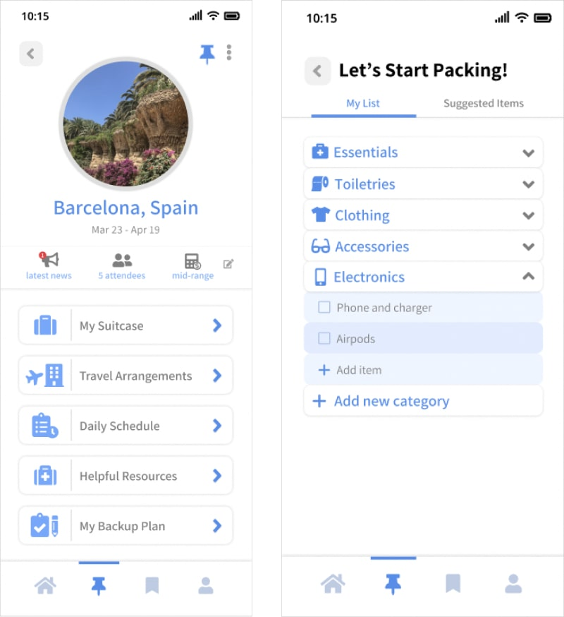
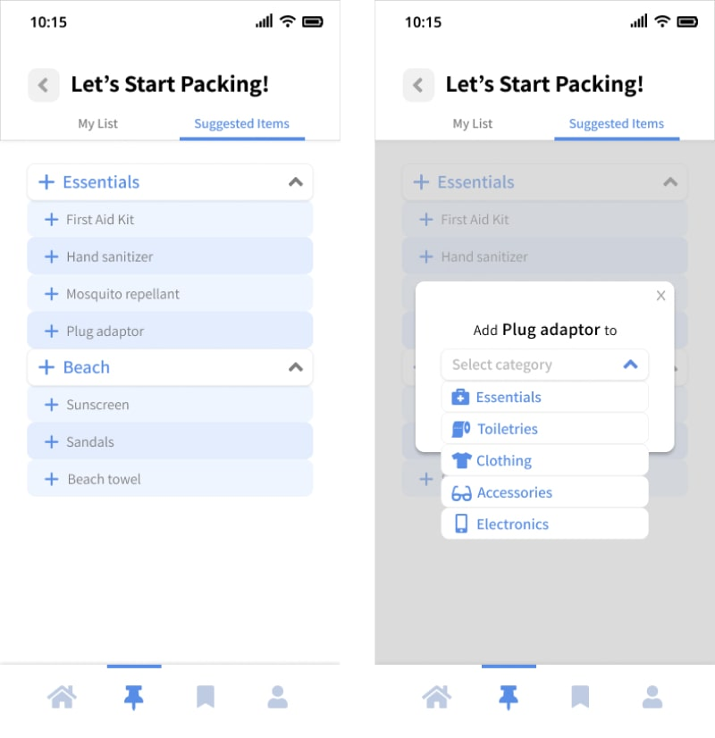
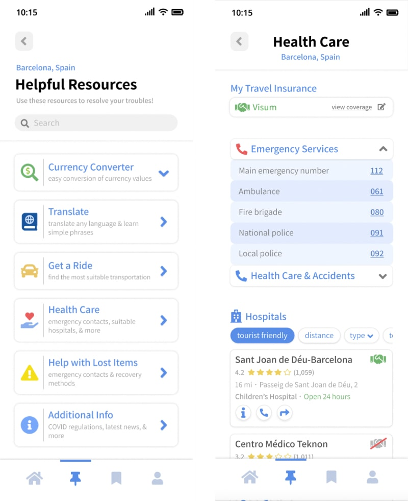
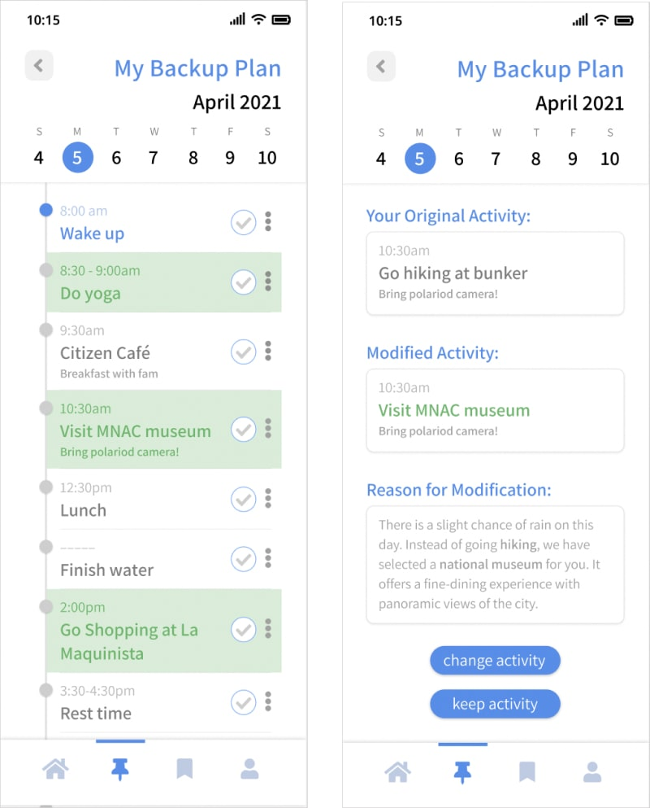

2021
My role:
Designer
Tools
Figma
Goal
Help travelers create an organized plan for their trip, alleviate the amount of research and stress that they may have, and make traveling affordable.
Empathize
Do you set a budget for your trip?
-
“Yes, I do a lot of research in order to determine how much I will be spending.”
-
“No, I try to save up as much money as I can to pay bills and buy food.”
How do you plan your trips?
-
Doesn’t really have a detailed itinerary, but has a rough plan to follow
-
Use Google docs and spreadsheets to outline everything
What difficulties do you encounter while traveling?
-
Language barriers
-
Currency exchange
-
Healthcare access
-
Housing
-
Transportation
-
Phone plan/SIM card
-
Trouble with way-finding
Define
Target Audience
Travelers with low resources who travel often.
Pain Points
It is time consuming to plan a trip and adjust to a new environment. Feeling lost, confused, and hopeless without helpful resources.
How Might We...
Alleviate the amount of stress users have when budgeting for a trip, prepare them for shortcomings, and provide them with useful resources?
Solution
Travel Planner App
An app that focuses on helping users plan out several important details, such as knowing what they should pack, making travel arrangements, and planning their daily schedule. Also addresses possible problems by providing links to health, currency, and navigation resources, as well as a specified backup plan.
Competitive Analysis
I discovered many kinds of apps that already help travelers plan their trip. They allow users to create trips and add places to their itinerary, but they don’t help users with finding a good hotel or other necessities that could help them prepare. They are also not as detailed and some of them have very complex interfaces.
Thinking about the design...
User Flow

I started off with a blue theme and as I made changes, I colored the newly added parts in green. This way, I could quickly identify the new changes I made and understand my decisions.
Wire Flow

Visual Design

Goals
-
Intuitive and clean design
-
Not so text heavy
-
More visuals and icons
-
Feel less stressful and overwhelming
List of Features
Writing down a list of features and details allowed me to foresee how much information I would need to include on a screen. I started adding icons, titles, and descriptions based on this list and doing so really helped me visualize the layout.
Building the prototype...
Personalization
Splash Screen
One of the main things I noticed from my research is that not a lot of people use a travel planning app. In order to make the app feel personalized to the user and have them form a connection, I designed the splash screen with polaroids to give users the option to change the photos and captions.
Task 1: Create a Trip


Create a trip
The home page of this app starts on a page of created trips by the user. They are allowed to create new trips or plan what they will need for a specific trip.
Pin a trip
The user can pin one of their trips and access it through the pin icon in the bottom navigation bar, which is meant for easy access to the trip they are going on.
Task to complete
I kept the create trip process brief by only requesting users to select a location, select their dates, and name their trip because if the process got too long, users might not want to finish the task.
Task 2: Plan What to Pack


Features
-
Create a checklist of things to pack
-
Organize list into different categories
-
View and add suggested items to personal list
Task to complete
The user can plan what to pack by clicking on ‘My Suitcase’. They can either add/edit items to their own list or view the suggested items, which are AI generated based on the trip’s location and places that the user has planned to go.
Task 3: Access Health Care

Features
-
Saves travel insurance coverage for quick access and finding in network hospitals
-
Shows whether hospitals are in network with insurance or not
-
Displays emergency service contacts and other helplines
Task to complete
The user can access ‘Helpful Resources,’ which is specified to the travel destination selected. Focusing on health care, I added some helpful emergency contacts, other helplines, and hospitals they could go to depending on their insurance and filters they set.
Task 4: Edit Backup Plan

Features
-
Duplicates user’s schedule and modifies activities for unforeseen shortcomings
-
Users are allowed to change the modified activity
Task to complete
The app generates a duplicate schedule from the user’s initial plans and modifies certain activities for unforeseen shortcomings. Changes are highlighted in green and users can view the modified activity and decide whether to keep or change it.
Time to test the prototype...
Usability Tests
Task 1: Create a Trip
Scenario
You are a returning user and you want to go on a trip, but you're not sure where to go. Create a new trip by having the app help you generate your ideal travel destination, then select the location and trip dates.
Observations
-
Distracted by something that popped out to them more
-
Continuously tried to click on the bookmark icon on each trip because the blue outline stood out
-
After selecting the start date of the trip, tried clicking the create button instead of choosing end date
Task 2: Plan What to Pack
Scenario
After you have created your trip, you want to go to your pinned trip and start planning what to pack. Play around with some of the features on your own list, then go to the recommended items and add an item to your list.
Observations
-
Found interacting with “My List” very overwhelming and confusing
-
Having some drop down menus open and some closed made it hard for users to understand how to navigate
-
Letting users learn how modify their checklist steered the focus of navigating to “Suggested Items” away
Task 3: Access Health Care
Scenario
After eating out at a fancy restaurant with your family, you get food poisoning. You need to go to the hospital and you want to find one that is in network with your travel insurance. Navigate to your resources and access your health care. Select a private hospital that is closest to your location and open up the directions in maps.
Observations
-
The type of hospital written on each container did not stand out to them
-
Distracted or misled by specific words mentioned in the scenario
Task 4: Edit Backup Plan
Scenario
You have planned many outdoor activities for tomorrow, but there is a high chance of rain. You do not have time to re-plan your schedule, so navigate to your backup plan and explore your modified schedule. You see “visit MNAC museum” in green and you're not sure if you like that activity. Edit that activity and search for a new one.
Observations
-
Confused by the purpose of the three dots icon on the change activity page
-
Assumed that the three dots were what they were supposed to click to modify activity
Many testers mentioned that my app reminded them of Google’s design
system, therefore they found the interfaces very comforting and
familiar.
Revisions
Create a trip
-
Dimmed down some of the colors on buttons
-
Shrunk less important information and enlarged more important ones
Plan What to Pack
-
Removed exploring “My List” and closed all of the drop down menus
-
Only requested users to open up the drop down menu for “Electronics,” so they could see the difference after adding an item from “Suggested Items”
Access Health Care
-
Bolded the type of hospital, so that it stood out more
Edit Backup Plan
-
Removed the check box and three dots on the modified activity page, so that users wouldn’t get confused.
Challenges and Further Development
Challenges
-
Required a lot of research because not much of a traveler
-
Challenging and time consuming to design a single screen
-
Organizing my layers in Figma
Further Improvements
-
Design a logo and choose a suitable app name
-
Consider accessibility
Lessons Learned
-
Learned a lot about how traveling works and what are the essentials
-
Use bold color or large text mostly when emphasizing important information or call-to-action buttons
-
Focus on overall goal and not all of the small, insignificant details